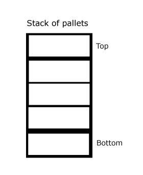
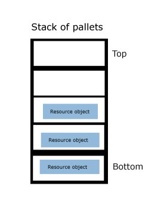
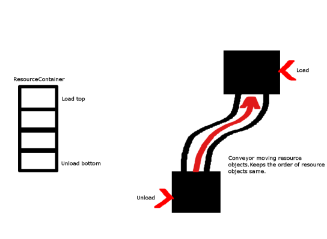
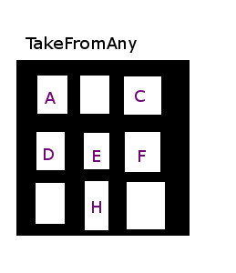

Resource handling
This document contains information on resource handling in fleet control.
Updated 16.06.2021
Version History
| Version | Date | Author | Change |
|---|---|---|---|
| 1.0 | 31.01.2020 | Tommi Kärki | Document created |
| 1.1 | 11.06.2021 | Aleksi Ålander | Added short description for quantity |
| 1.2 | 16.06.2021 | Elena Sgonova | Changed images sizes. Fixed image path |
Introduction
Glossary
| Term | Explanation |
|---|---|
| ResourceContainer | Abstraction for Container to store resource objects inside. Each symbolic point and AGV has one. |
| ResourceContainerType | Type of resource container. Currently MultiResourceContainer (allow multiple resource objects), SingleResourceContainer (allow single resource object), and BufferResourceContainer (see Using buffer lanes documentation) are implemented. |
| Resource object | Abstraction to represent a single resource object. This can be for example pallet, apple crate or anything that can be transferred. |
| Resource slot | Each resource object takes a single slot inside ResourceContainer. |
| Resource quantity | Internal quantity for resource object. If all resources in the stack are identical, quantity bigger than 1 can be used instead of generating multiple unique resources. |
| Load capacity | How many resources of given Type are allowed at once onboard AGV or Symbolic Point |
| TakeMode | Configuration from which slot of Resource Container do we take resource object from. ie. Top/Bottom |
| AddMode | Configuration for which slot in Resource Container we add resource object to. ie. Top/Bottom |
Configuring container
Container has a wide support for different configurations and picking a correct configuration is important. Correct configuration depends on usage scenario, below is an outline of difference scenarios.
Configuring Container as Stack
Stack type container can be used, when resources are stacked on top of each other. The stack can be, for example, empty marked space on the floor or somewhere else that follows First In - Last Out principle.

Empty location where pallets can be stacked

Pallets stacked at location
Configuration:
- ContainerType: MultiResourceContainer
- StackMode: Always
- Slots: Number of resource objects which can be stacked.
- AddMode: Top
- TakeMode: Top
or
- AddMode: Bottom
- TakeMode: Bottom
Configuring Container as Queue
The queue type container should be used when resources are moved in the container like they would be in queue.

Configuration:
- ContainerType: MultiResourceContainer
- StackMode: Always
- Slots: Depending how long queue will be.
- AddMode: Top
- TakeMode: Bottom
or
- AddMode: Bottom
- TakeMode: Top
Configuring container as Single (only single resource object on container)
Single container can be used when no multiple resources can be fit in the same container.
Configuration #1:
- ContainerType: SingleResourceContainer
- StackMode: Always or Never
- Slots: Ignored for SingleResourceContainer
- AddMode: Top or Bottom
- TakeMode: Top or Bottom
Configuration #2 (recommended):
- ContainerType: MultiResourceContainer
- StackMode: Never
- Slots: 1
- AddMode: Top or Bottom
- TakeMode: Top or bottom
Configuring container as TakeFromAny
This container type can be used when all different resource types have their own slot.
Note: This container type is not supported by AGV's.

Configuration:
- ContainerType: MultiResourceContainer
- StackMode: Always
- Slots: Depends on how many resource types allowed
- AddMode: Top or bottom
- TakeMode: FromAny
Configuring Container as CombineSameType
Combines same resource types in the same slot.
Note: This container type is not recommended.
Configuration:
- ContainerType: MultiResourceContainer
- StackMode: CombineSameType
- Slots: Depends on how many resource types allowed
- AddMode: Top or bottom
- TakeMode: FromAny or Top or Bottom
Configuring container with internal quantity
Container with internal quantity can be used, when resource object is actually container for something else, and container should not track objects inside container. For example crates containing other items.
Note: this configuration disabled individual tracking of items inside container and assumes container is built-in to AGV. This can cause multiple resource objects to be generated when splitting.
Internal quantities are supported in all configurations. Quantity is specified when communicating via MES interface or manually from Navithor Client.
When using internal quantity it's important to configure Load Capacity for Machine type(s) and Symbolic Points.
Resource objects VS internal quantity
Main difference comes from tracking. Navithor will keep track of each resource object closely while internal quantity will generate new resource objects complicating tracking.
Additional features
Permanent resources
Parameter:
ResourceManager_PermanentResources
Related parameters:
ResourceManager_PermanentResourceAlarmValidityTime
This feature makes all resource objects permanent and undeleteable. This only makes sense we are transferring same physical object between locations.
Lingering resources
Parameter:
ResourceManager_ResourceLingeringTime
This feature makes resources linger at location for a certain period of time after deletion. Main use of this when location has sensors that detect when resource is lifted up and send signal "no resource at location" to Navithor before AGV Loading is actually completed. This prevents situation where AGV reports loading is completed but Location is emptied during loading. If parameter is enabled the AGV will load Resource object that used to be there.
Overriding duplicate resources when unloading
Parameter:
MachineUnloadCompletionOverridesIdenticalAtTarget
This feature will override resource object at target when unload is completed if resource object at target is of same type. Purpose of this parameter is similar to Lingering resources, Navithor receives a signal that resources are at location before unload is completed.
Stack unload / load
Parameter:
ResourceManager_OverrideUnloadResourceAlwaysMovesEntireStack
Parameter:
ResourceManager_OverrideLoadResourceAlwaysMovesEntireStack
This feature overrides default loading / unloading behaviour to always load / unload all resource objects instead of single object.